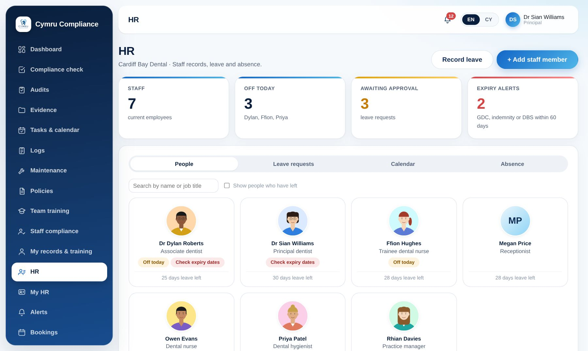
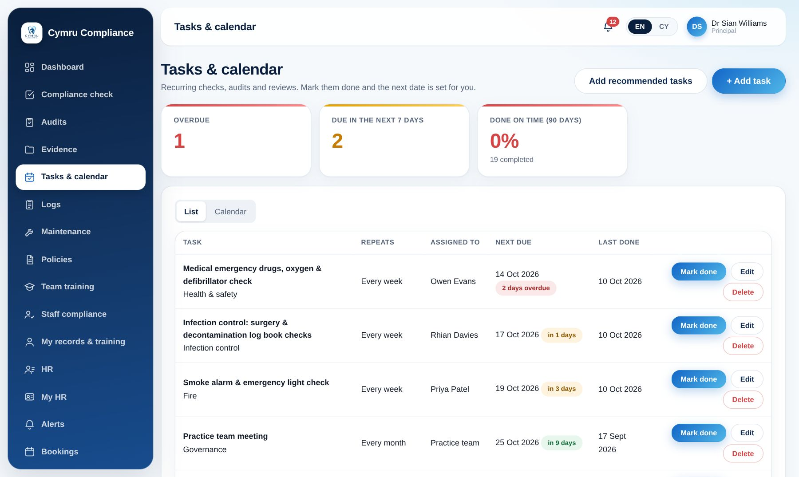
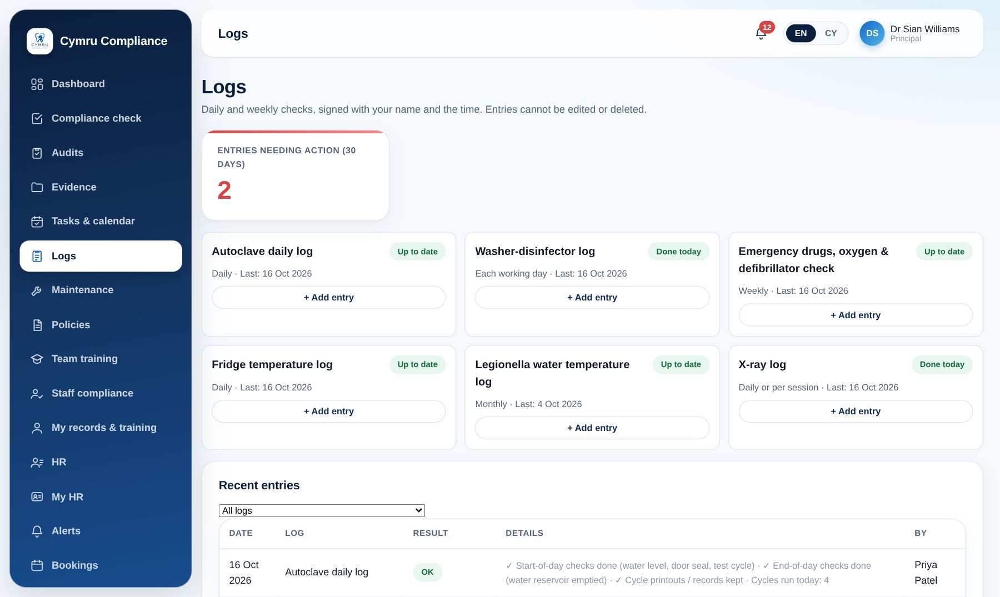
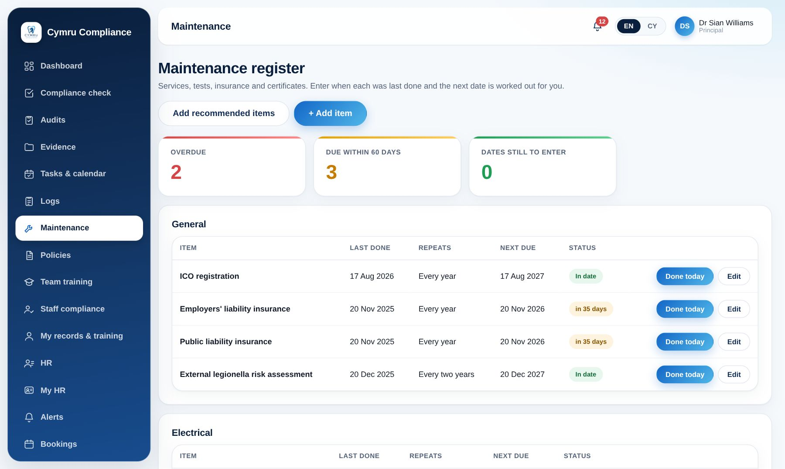
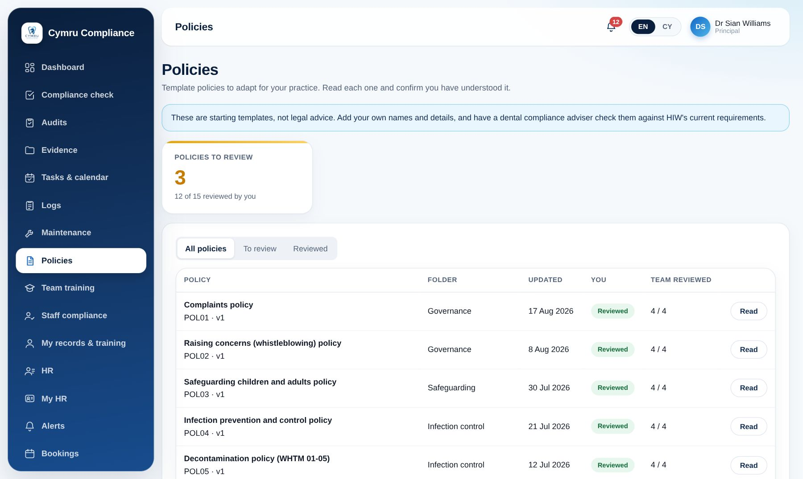
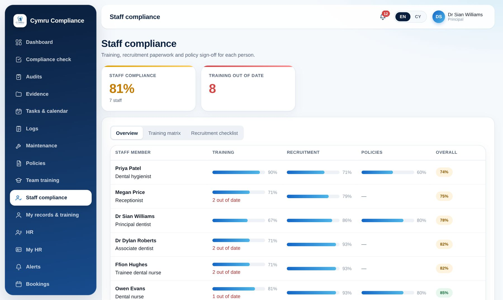
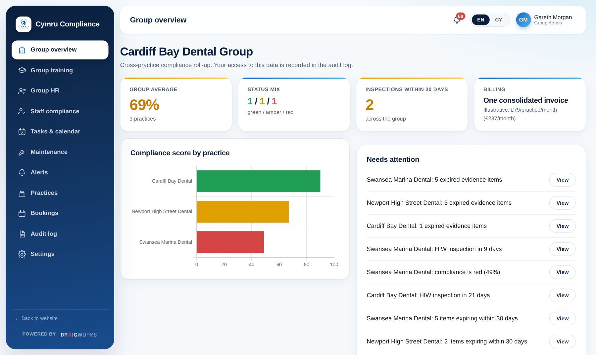

Stay HIW-inspection-ready, every day of the year — not just the week before.
Cymru Compliance is the compliance platform built specifically for Welsh dental practices and corporate groups — mapped to HIW's own framework, bilingual by design, with a genuine multi-practice view no CQC-first tool offers.

The same avoidable gaps, inspection after inspection
HIW's own inspection insights show this is systemic, not isolated — and it's rarely about clinical care.
Pre-employment checks
Missing reference checks, incomplete employment history, and missing DBS checks are the most-cited recurring failure.
Overlapping frameworks
HIW registration, IR(ME)R 2017, WHTM 01-05 and GDC standards all apply at once, with no single system tying evidence to each.
An underused window
Inspections are usually announced up to 12 weeks ahead — a defined preparation window that's frequently wasted.
Invisible group risk
Corporate groups have no consolidated view of risk across sites — a failing practice is invisible until it's a headline problem.
Everything a practice needs to stay ready — in one place
One login for the whole compliance workload: evidence, training, self-assessment, and expert support when it matters most.
Compliance Dashboard
Single-screen red/amber/green status across registration, staff training, decontamination, radiation protection, health & safety and policies.
Learn more →Certificate & Evidence Portal
Upload by category with expiry tracking, version history and a Principal sign-off workflow — a complete audit trail.
Learn more →Induction Training
Structured onboarding that directly targets HIW's most-cited failure: incomplete pre-employment and induction checks.
Learn more →Compliance Check
A self-assessment tool that mirrors HIW's real inspection framework, so you can mock-inspect yourselves before they arrive.
Learn more →Practice Manager Training
A premium, expert-led course for practice managers covering end-to-end HIW inspection readiness.
Learn more →Pre-Inspection Visit
A human compliance expert runs a mock inspection ahead of the real one, with a written gap report loaded into your dashboard.
Learn more →HR and the daily compliance tools, built in
Beyond evidence and self-assessment: the everyday records HIW asks to see, in the same login and in English and Welsh.

HR & staff records
Staff profiles, leave and absence, expiry dates and recruitment checks — linked to compliance.
Learn more →
Tasks & calendar
Recurring compliance jobs scheduled, assigned and signed off.
Learn more →
Digital logs
Autoclave, fridge, emergency kit, legionella and X-ray logs — signed and time-stamped.
Learn more →
Maintenance register
Servicing and certificates with next-due dates calculated for you.
Learn more →
Policies with sign-off
English and Welsh policy templates, with read-and-confirm tracking.
Learn more →
Staff compliance & audits
A training matrix, recruitment progress and the audits inspectors expect.
Learn more →One platform, the right view for everyone
Corporate / multi-practice
A roll-up view across every practice in the group, with benchmarking and one consolidated bill.
Dentist / practice owner
Full read/write on the dashboard, evidence library and training records for their practice.
Practice team member
Their own certificates, training and induction checklist, plus a read-only view of overall status.
HIW, read-only
Time-boxed, practice-granted read-only access mirroring exactly what HIW inspects against.
One dashboard for every practice you own
Cymru Compliance is the only platform giving Welsh dental groups a genuine cross-practice view — compliance-score-by-practice, a ranked "needs attention" panel, and consolidated billing across 2, 5 or 20+ sites.
- Group HR, training, staff compliance and maintenance rolled up across every site
- Assign training to selected practices in one action
- One consolidated invoice, strict data isolation per group

From sign-up to inspection day
Sign up
Independent practice or corporate group — set up your practice profile and invite your team.
Upload & assess
Load your evidence, run induction training, and complete your first self-assessment compliance check.
Close the gaps
Work the dashboard's action list, book a pre-inspection visit, or enrol your practice manager on training.
Inspection day
Grant your HIW inspector time-boxed read-only access, mirroring exactly how they inspect.
Built around HIW. Genuinely bilingual. Not a CQC tool with a Welsh sticker.
Every English competitor — iComply/Agilio, ComplyPlus, QCS, Dental Professional Portal — is built around the CQC framework. None offer a genuine multi-practice Welsh group view, and none are bilingual by design.
Read the HIW guide →Cymraeg a Saesneg, o'r cychwyn
A full Welsh/English toggle across the marketing site and the portal — not just a translated homepage.
- Mapped to HIW's regulatory language, not CQC's
- IR(ME)R 2017, WHTM 01-05 and GDC standards, in one place
- Built for Welsh independents and Welsh corporate groups alike
See Cymru Compliance on your own practice
Book a short demo, or register your interest now and we'll be in touch as the portal opens up.